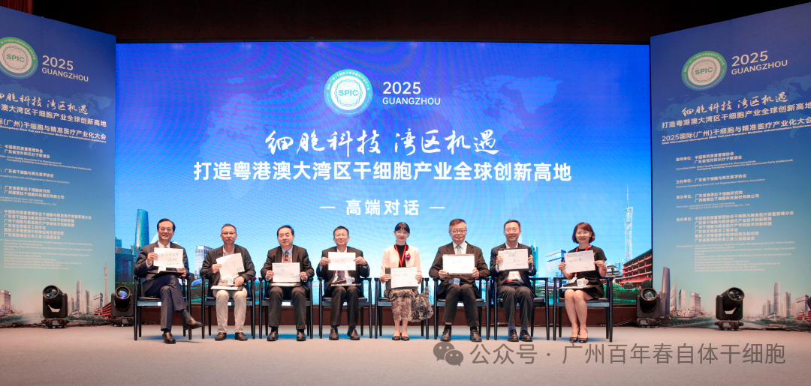
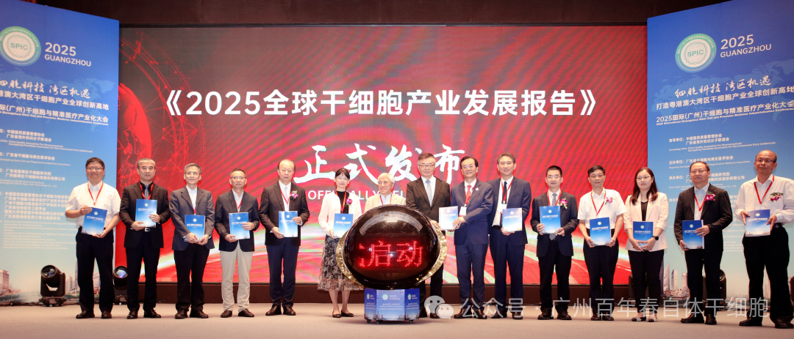
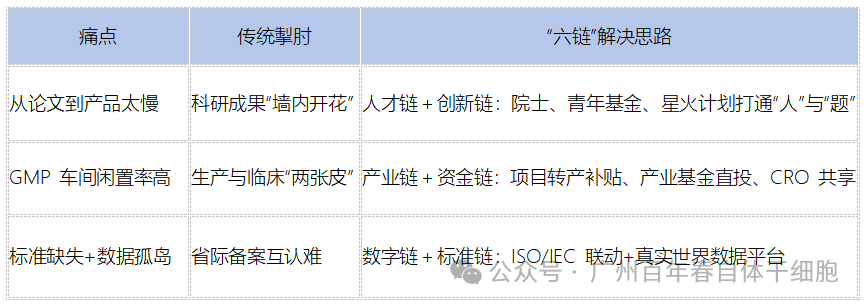
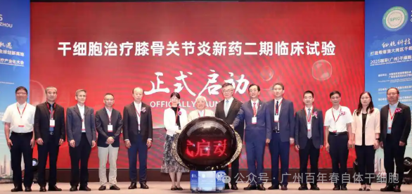
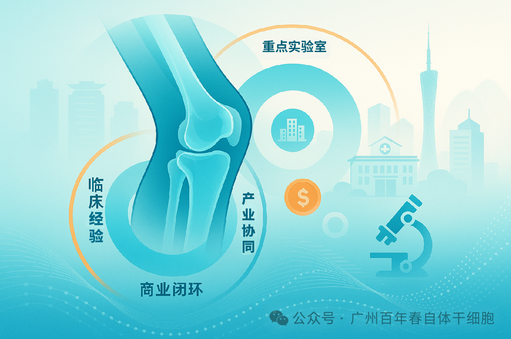
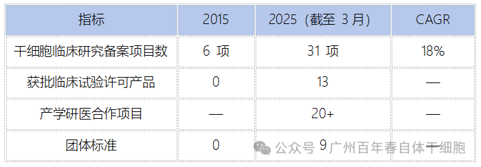
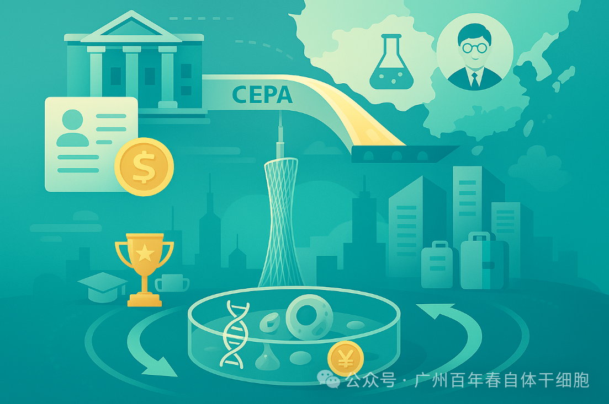
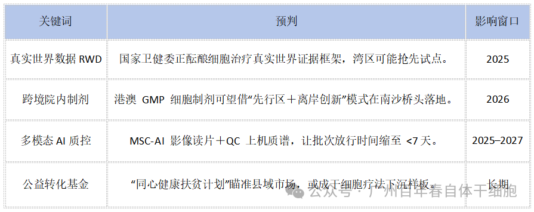

别等身体亮红灯！百年春自体干细胞，为您定制细胞级抗衰防线
2026-03-04

About Us
关于百年春

过去我们常说，“北美看技术、欧洲看规范、日韩看应用”。今年5月20日，广州干细胞与精准医疗产业化大会则首次把“技术＋规范＋应用”三者打包呈现，展现出粤港澳大湾区罕见的先发优势。更具深意的是，这场大会恰逢《广东省生物制造产业创新发展实施方案》发布后的首个窗口期，政策红利与资本热潮叠加，为整个行业带来空前关注。
本次大会的高频词——老龄化、跨境协同、六链融合、产业标准——无一不精准切中2025至2030年行业发展主线。尤其值得关注的是，膝骨关节炎MSC二期临床项目，直指1.13亿“银发人群”的刚性需求，并首次展示“本地企业＋医院＋CRO”全流程协作新范式，项目含金量可见一斑。接下来我想从四个方面谈谈我的几点感受：

一、“六链”融合战略：湾区打法有何不同？
这次大会主席提出了“人才链、创新链、产业链、资金链、数字链和标准链”六链融合，其实就是针对行业的老三难。
从论文到产品转化太慢，科研成果常常“墙内开花”，为了解决这个问题，湾区依靠院士、青年基金、星火计划等，把人才和创新资源打通，促进产学研一体化。
GMP车间利用率不高，临床和生产各自为战，湾区则通过项目转产补贴、产业基金直投和CRO资源共享，把产业链和资金链结合起来，激活产业全流程。
标准缺失和数据孤岛问题突出，省际备案互认难，湾区则是以数字链和标准链为抓手，通过ISO/IEC国际标准联动，以及真实世界数据平台，推动行业标准化和数据共享。

简单来说，2015–2020 年干细胞产业靠“概念红利”活下来，2025年以后谁能把这六条链合成一条高效的价值链，谁就能率先跑出一套可复制、可推广的商业模式。

二、为什么膝骨关节炎率先突破？
首先，膝骨关节炎的患者基数庞大，全国患病率8.1%，总人数高达1.13亿，是个典型的“巨型灰犀牛”。而且，像关节镜手术、玻璃酸钠注射这样的常规治疗，每年都需要花不少钱，所以许多患者愿意尝试“一次治疗、维持一到两年”的干细胞新疗法。
技术上，膝关节属于低免疫排斥的封闭腔注射，操作相对简单，安全性高。国际上不少权威期刊也验证了间充质干细胞在疼痛缓解和关节结构改善方面的优效性。
更重要的是，广州本地有三家国家级骨关节重点实验室和成熟的医学影像平台，中山一院、孙逸仙纪念医院等大医院骨科团队也很成熟，这为真实世界数据随访和多中心研究提供了坚实基础。选择膝骨关节炎作为突破口，是“产业协同 + 临床验证 + 商业闭环”三层思路的折中最优解。

三、十年磨一剑：湾区为何成全球风向标？
如果看过去十年，2015年时湾区只有6项干细胞临床备案项目，到了2025年已经增长到31项，年复合增长率18%。获批的临床试验产品从零增长到13个，产学研医合作项目也超过20项，团体标准从零到九项。

背后支撑的是广东省不断出台的财政补贴、医保付费、数据互认等政策组合拳，还有依托CEPA和港澳药械通，能最快引进海外原材料和临床专家。同时，湾区通过税收优惠和政策支持，把诺奖得主、院士、海归科学家等顶级人才吸引到南沙、广州这些创新高地。
可以说，湾区的最大壁垒，不只是砸钱，而是把“标准化的科学”与“灵活的商业”放进同一个监管沙盒里，让创新和合规可以同步循环迭代。

四、放眼未来，这几个关键词特别值得关注。
第一个是“真实世界数据”，国家卫健委正在制定相关政策，湾区有望成为全国第一个试点地区。第二是“跨境院内制剂”，未来港澳的GMP细胞制剂，可能会通过“先行区+离岸创新”的模式在南沙快速落地。第三是“多模态AI质控”，比如用人工智能做影像判读、用质谱仪器进行质量控制，有望把细胞批次放行的时间缩短到7天以内。最后，“公益转化基金”也值得关注，像“同心健康扶贫计划”这样的新机制，未来可能成为干细胞疗法下沉到基层市场的重要样板。

站在2025的门槛往前看，“细胞科技 湾区机遇”不只是一句简单的口号，而是将老龄化挑战、跨境政策红利和六链生态系统有机融合的系统性工程。我们将持续跟进并与您分享：
关键临床进展节点（如膝骨关节炎二期试验的中期安全数据）
真实世界数据（RWD）框架落地及相关标准的动态
公益基金如何推动市场增量，助力创新普及
欢迎分享转发，让更多人看到中国湾区细胞科技正在如何改变世界。